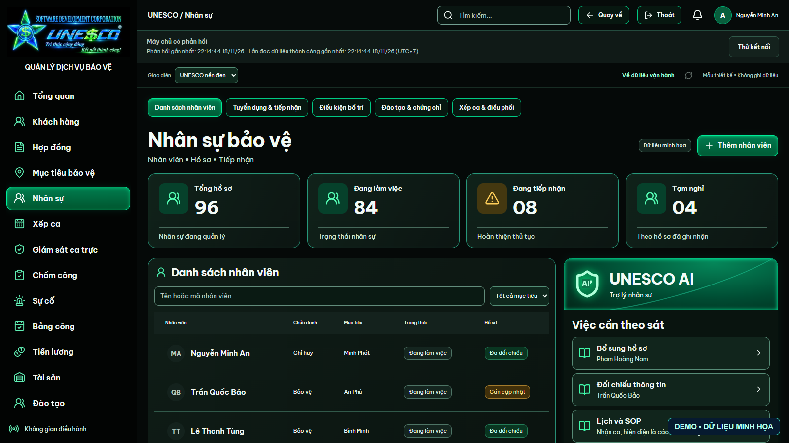
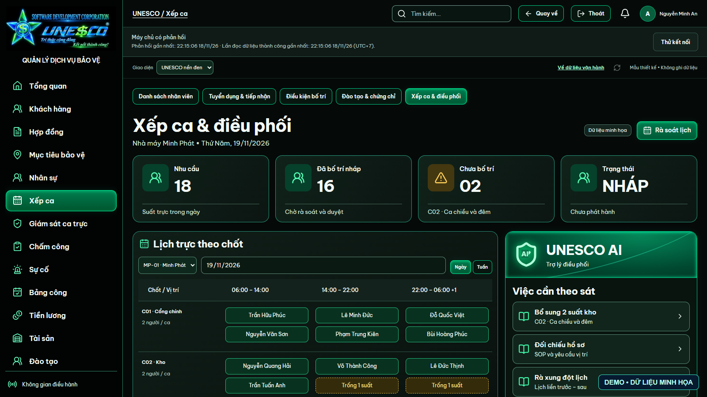
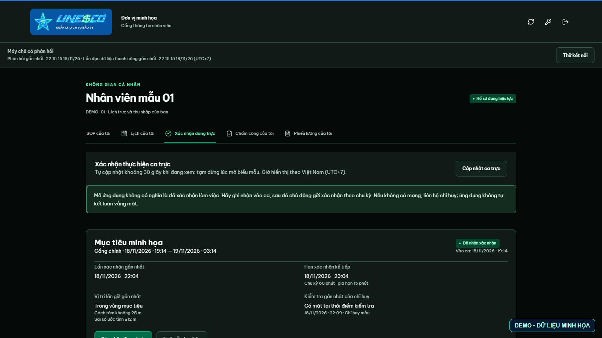
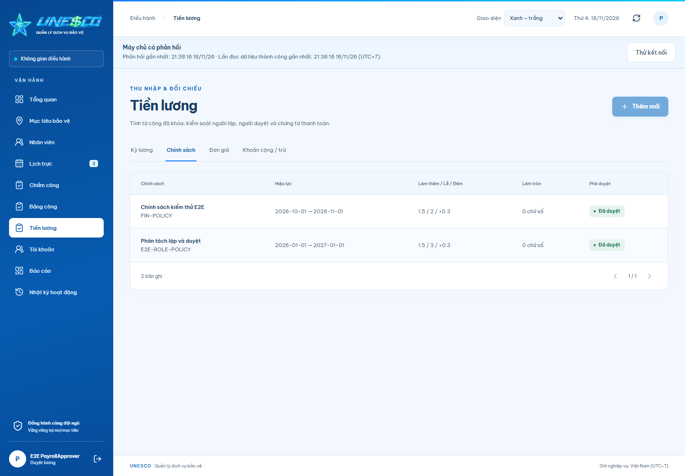

TÀI LIỆU THỰC HÀNH · 18/11/2026Hướng dẫn sử dụng
Hướng dẫn sử dụng
theo vai trò.
Thực hiện từng bước trên môi trường của đơn vị sau khi được cấp quyền.
Tải bản PDF ↓Bắt đầu đúng vai trò
Hướng dẫn nhanh cho quản trị, điều phối, chỉ huy và nhân viên. Tên nút có thể nằm trong menu thu gọn trên điện thoại. Phiên bản nội dung: 18/11/2026.

- Mở địa chỉ hệ thống do đơn vị cung cấp. Đăng nhập bằng tài khoản được cấp; không dùng tài khoản chung giữa nhiều người.
- Ghi nhớ tài khoản chỉ lưu tên đăng nhập sau lần đăng nhập thành công, không lưu mật khẩu và không kéo dài phiên.
- Quên mật khẩu: liên hệ quản trị viên theo thông tin nội bộ của đơn vị. Nút trên màn đăng nhập mở hướng dẫn, chưa tự gửi email đặt lại.
- Khi kết thúc, bấm Thoát hoặc Đăng xuất. Không chia sẻ tệp thông tin đăng nhập với người xem demo.
Quản trị: chuẩn bị trước ca

- Mở Mục tiêu bảo vệ: tạo khách hàng, mục tiêu và chốt. Khai hợp đồng dịch vụ, thời hạn, quân số rồi kích hoạt sau khi kiểm tra.
- Mở Nhân sự: tạo hồ sơ, thời gian làm việc và mục tiêu chính. Ghi hợp đồng lao động, phép, chứng nhận và thông tin liên quan theo hồ sơ nguồn.
- Mở Tài khoản: cấp vai trò và phạm vi phù hợp. Nhân viên phải liên kết đúng hồ sơ; chỉ huy chọn mục tiêu phụ trách. Các vai trò chuyên môn dùng quyền theo chức năng.
- Mở Giám sát ca trực, chọn một mục tiêu rồi Quy tắc mục tiêu. Cấu hình chu kỳ, gia hạn và vùng GPS theo thực tế; mặc định 60 + 15 phút, GPS không bắt buộc.
Điều phối: kiểm tra rồi công bố lịch

- Ở Nhân sự → Điều kiện bố trí, chọn mục tiêu/chốt và khoảng thời gian. Mở căn cứ và ghi biên bản đối chiếu khi có quyền.
- Tại Đào tạo & chứng chỉ, tách kết quả học khỏi bước xác minh chứng nhận. Công bố SOP đúng phiên bản, ngày hiệu lực và đối tượng áp dụng.
- Mở Xếp ca, chọn ngày hoặc tuần và mục tiêu. Kiểm tra suất còn trống, lập ca và phân công đủ người.
- Trước công bố, xử lý ca trùng, nghỉ, thời hạn hợp đồng, chứng nhận và SOP bắt buộc. Nếu bị chặn, sửa đúng nguồn rồi kiểm tra lại.
Nhân viên: vào ca và gửi xác nhận

- Mở SOP của tôi, đọc nội dung và tự xác nhận đúng phiên bản. Không nhờ người khác xác nhận hộ.
- Mở Lịch của tôi, kiểm tra mục tiêu, chốt và giờ; bấm Vào ca theo thực tế. Chọn tab Xác nhận đang trực.
- Bấm Xác nhận đang trực trên thẻ ca. Nếu gửi GPS, bấm Lấy vị trí hiện tại và cho phép truy cập vị trí; đọc sai số trước khi gửi.
- Nhập ghi chú hoặc lý do không lấy được GPS. Mục tiêu yêu cầu GPS nhưng không lấy được cần lý do ít nhất 5 ký tự. Bấm Gửi xác nhận, đọc thông báo và hạn kế tiếp.
- Kết thúc, ghi Ra ca. Dùng Lịch sử xác minh để xem các lần gửi và kết quả chỉ huy.
Chỉ huy: xử lý tín hiệu cần kiểm tra

- Mở Giám sát ca trực. Chọn ngày/mục tiêu, hoặc lọc Cần kiểm tra để xem ca thuộc phạm vi được giao.
- Đối chiếu giờ nhận, lần vào/ra, hạn xác nhận, vị trí và sai số. Ngoài vùng, gần ranh giới hoặc thiếu tín hiệu cần kiểm tra thực tế.
- Bấm Xác minh. Chọn Có mặt, Vắng mặt hoặc Chưa đủ căn cứ; ghi cách kiểm tra và nội dung căn cứ. Chỉ lưu sau khi thực sự đã kiểm tra.
- Mở Lịch sử để xem riêng xác nhận của nhân viên và kết quả của chỉ huy. Kết quả xác minh không tự sửa bảng công/lương.
Đối soát công và lương

- Ở Chấm công → Biên nhận & xác minh, xem bản ghi chưa khớp ca. Đối chiếu giờ thiết bị, giờ tiếp nhận, ca và nguồn trước khi khớp/xác minh. Người nhập cần người khác xác minh.
- Bảng công: tổng hợp theo mục tiêu/tháng, xử lý thiếu cặp và hàng chờ; khi nguồn đổi cần tổng hợp lại. Gửi người khác duyệt rồi khóa sau khi kết thúc kỳ.
- Tiền lương: dùng công đã khóa cùng chính sách và đơn giá đã duyệt. Kiểm tra chi tiết, cảnh báo nguồn, gửi duyệt và khóa theo quyền.
- Ghi chứng từ trả lương sau khóa nếu có quyền. Sai chứng từ thì đảo có căn cứ. Công đã khóa cần điều chỉnh sang kỳ sau, giữ kỳ gốc.
Khi gặp lỗi hoặc mất kết nối
- Dữ liệu có thể đã cũ: tải lại đúng danh sách. Thử kết nối chỉ kiểm tra phiên, không làm mới toàn bộ màn hình.
- Chưa xác định đã lưu: xem lịch sử/kết quả trước khi gửi lại. Với biểu mẫu hỗ trợ Gửi lại xác nhận, dùng lại đúng biểu mẫu để giữ mã chống trùng.
- Lỗi dữ liệu đã thay đổi (412): giữ nội dung cần đối chiếu, tải bản mới và kiểm tra trước khi sửa; không ghi đè bằng bản cũ.
- Hết phiên hoặc bị thu hồi quyền: đăng nhập lại hoặc tải lại quyền. Biểu mẫu cũ bị xóa để không gửi dưới tài khoản khác.
- Không có mạng hoặc GPS: liên hệ chỉ huy. Chưa có hàng chờ offline bền vững qua đóng ứng dụng; không coi mất tín hiệu là vắng mặt.
Bài tập đánh giá trước khi áp dụng
- Dùng một mục tiêu mẫu với 18 suất trực: bố trí 16 suất, tìm 2 suất thiếu rồi kiểm tra điều kiện công bố.
- Theo dõi SOP: 18/24 người xác nhận = 75%, còn 6 người. Kiểm tra đúng phiên bản và điều kiện chốt; không chỉ nhìn tỷ lệ.
- Thử một ca có xác nhận đúng vùng, một ca ngoài vùng và một ca quá hạn. Đối chiếu dữ liệu và ghi căn cứ, không tự trừ công.
- Đối soát ví dụ 540/480/60 phút, một bản ghi gửi lại, một nguồn đến muộn và một kỳ đã khóa. Kiểm tra lịch sử trước và sau xử lý.
- Thử từng vai trò, điện thoại và mạng tại mục tiêu. Ký xác nhận kết quả nghiệp vụ cùng đơn vị trước khi vận hành thật.